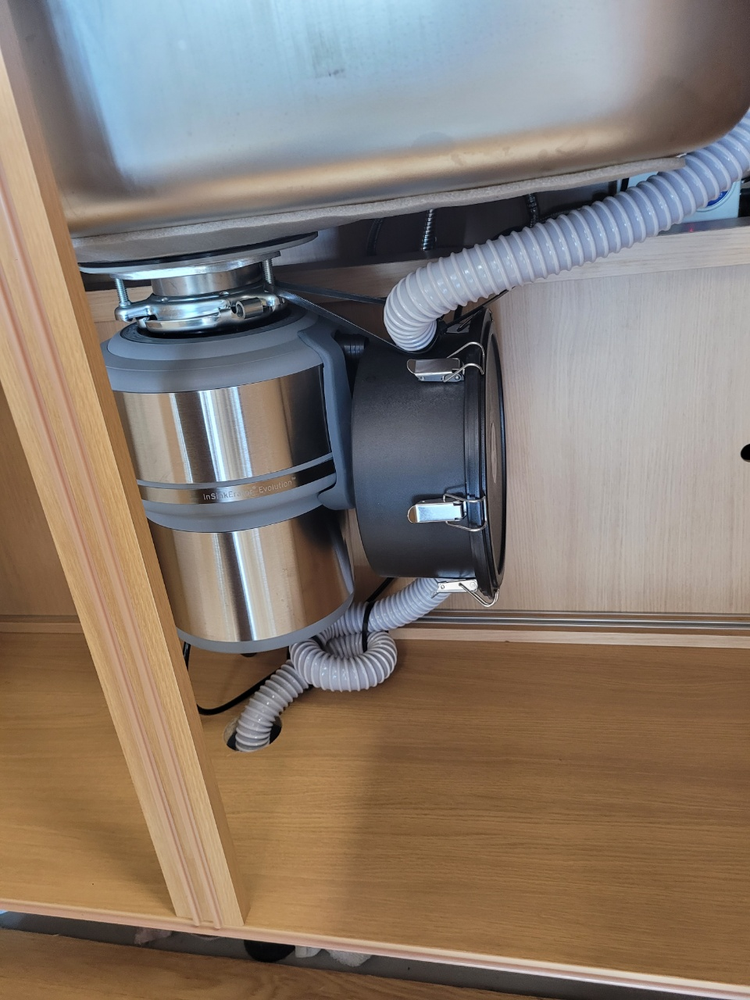
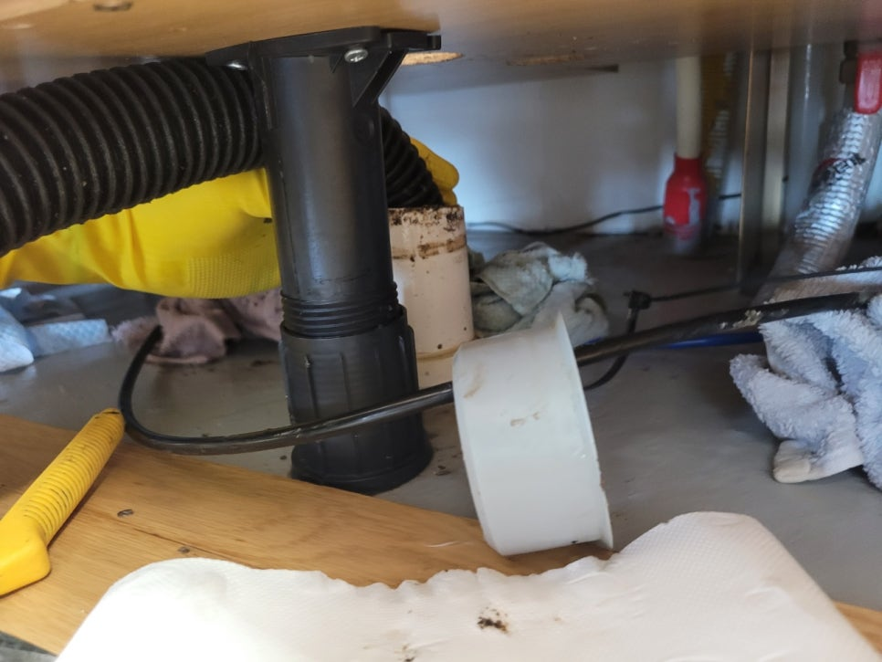
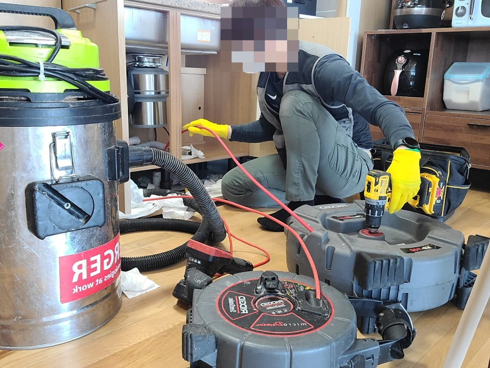
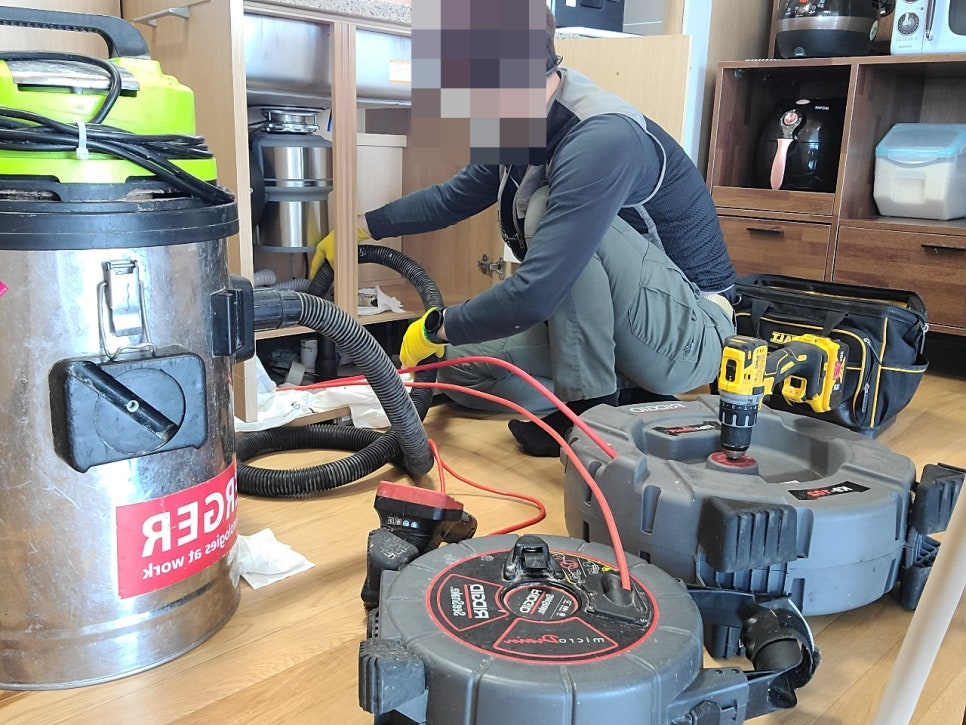
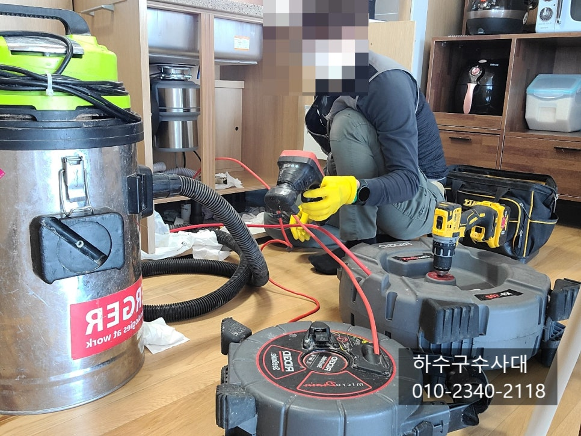
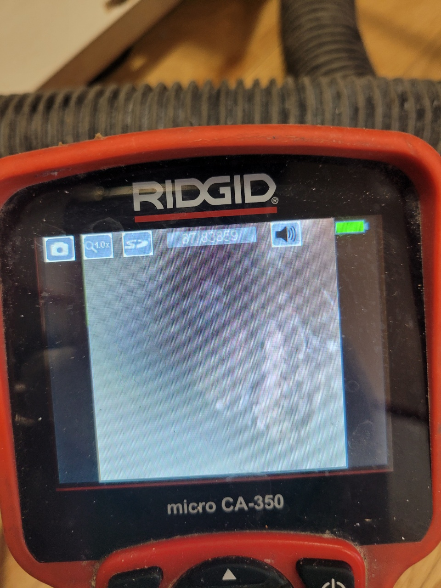
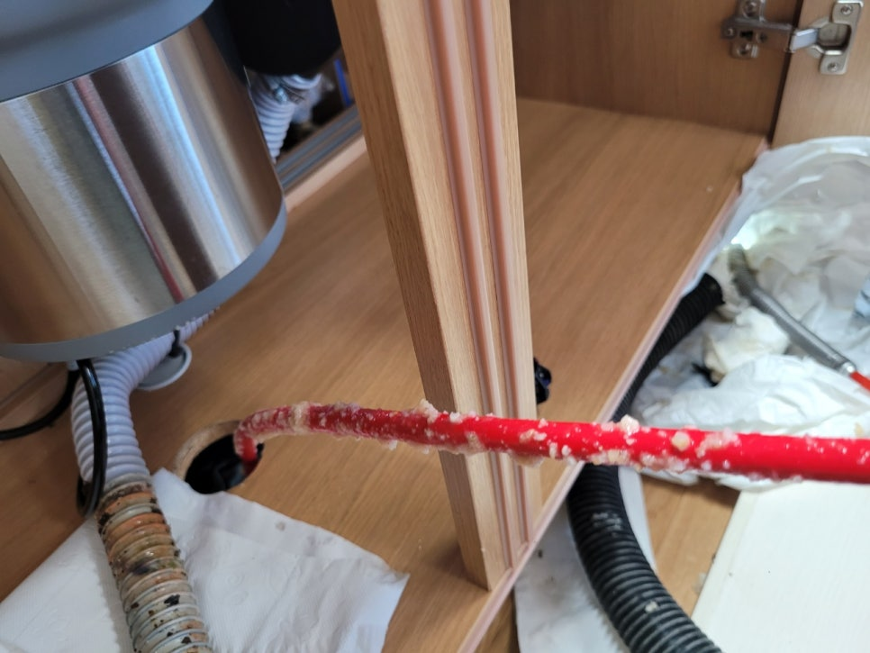

🏠 광교 싱크대 막힘 뚫음 광교동 하수구 업체 뻥 뚫어드립니다!
수원 싱크대막힘 전문 시공 후기

📋 작업 개요
- 위치: 수원
- 서비스 유형: 싱크대막힘, 하수구막힘, 배관막힘, 누수수리, 역류해결, 뚫는업체, 고압세척, 설비공사
- 작업 일시: 2022. 4. 10. 23:01
- 업체명: 하수구수사대 (010-5615-2118)
🔍 문제 상황
광교 싱크대 막힘 뚫음 광교동 하수구 업체
안녕하세요.
광교 싱크대 막힘 뚫음
광교동 하수구 업체
인사드립니다.
이번에 다녀온 현장은
아파트에 거주하는 의뢰인분께서
갑자기 주방에서
역한 냄새와 함께
물이 역류하고 있다고
연락을 주셨습니다.
이는 배관에 문제가 생겨
주변 세대에 피해를 줄 수 있어
서둘러 방문해
어떤 상황인지를 체크했습니다.
음식물 처리기를 사용하시는데
많은 양의 누룽지를 갈아 버리는
과정에서 하수구가 막힌 현장입니다.
다행히 하수구가 막힌걸 금방 아셔서
물이 조금씩 새어나오는 걸 확인하셨어요.
모르고 계속 사용하셨다면 밑에집으로
누수가 생기기도 하기때문에
평소보다 물이 잘 내려가지 않는다면 확인해 볼
필요가 있어요.

🔎 원인 분석
💡 전문가 진단: 하수구수사대최신장비보유!1년as 보장!주말,공휴일도 ok!010-2340-2118
막상 문제가 생기게 된다면
망가진 벽지 공사를
해주셔야 할 수 있어서
비용이 많이 청구되는 경우가
종종 있습니다.
현장에 방문을 하였을 때는
고객님께서 악취가 지독해
하수구 입구를 막아둔 상태였어요.
살짝 열어보니 상당한 냄새가
코를 찌르고 있었는데요.
주방의 경우
기름기가 많이 흘러가다 보니
배관 벽에 붙어 점점 딱딱해져
결국 쉽게 막히게 되어요.
여기에 음식물이 끼게 된다면
흘러가지 못해 썩게 되어
악취가 나기도 합니다.
정확한 판단을 하기 위해
내시경을 이용하여
문제 부위에 무엇이 관을
막고 있는지 확인을 하였습니다.
광교동 하수구 업체는
어떤 두께의 관이라도 체크할 수 있도록
다양한 장비를 구비하고 있어
편하게 문의하시면 됩니다.

🔧 작업 과정
이 현장의 경우
음식물이 과하게 막혀
물이 제대로 흘러내려가지 못하는 상황으로
배관에 심각하게 껴있는
석화와 이물질을 제거하면
문제가 해결될 것으로
판단되었습니다.
사진을 보시다시피
내부에 석회가 상당히
붙어있는 것이 보이는데요.
신축에서 이러한 문제가 발생했다면
공사를 하며 나온 먼지들이
물과 만나 뭉치게 되어
이처럼 딱딱해지는 경우가 있어
체크를 하는 것이 중요합니다.
간단한 과정이기는 하지만
기술자의 실력이나 경험이
부족할 경우 자칫 배관에
손상을 입혀 더 큰 사고로
이어질 수 있기 때문에
업체를 선정할 당시
꼼꼼히 비교하셔야 합니다.
우선 하수구 내에 있는 이물질들을
제거한 뒤에 배관세척을 하여
기름덩어리를 모두 제거하여줍니다.
만약 원인을
제대로 제거하지 않는다면
나중에 또 같은 문제가 반복적으로
발생할 수 있기 때문입니다.
광교동 하수구 업체가
배관 내에 있는 음식물을 꺼내보니
상당량이 배출되었어요.
작은 물질들을 흘러갈 수 있겠지만
결국 뒤엉켜버릴 수 있으므로
최대한 걸러내어 버리시는 것이
좋습니다.
본사의 경우 수많은 현장을 다니면서
여러 케이스를 접한 베테랑들로
고객님들이 상당히 만족해하는


✅ 작업 완료
광교동 하수구 업체로
고객님의 고민을 말끔하게
해결해 드리고 있으니 언제든
편하게 문의하시길 바랍니다.
하수구수사대
최신장비보유!
1년as 보장!
주말,공휴일도 ok!
010-2340-2118
경기도 수원시 영통구 봉영로 1612 7층 710-A19호




⚠️ 베란다 누수 및 방수 관리 방법
- ✅ 비가 많이 올 때 창틀 주변이나 아래층 천장에 얼룩이 생기는지 정기적으로 확인해 보세요.
- ✅ 우수관 주변 실리콘 마감이 들뜨거나 깨진 틈새가 있는지 손상 여부를 수시로 체크하세요.
- ✅ 베란다 바닥 타일의 줄눈(메지)이 소실되면 그 틈으로 물이 침투하여 누수가 유발됩니다.
- ✅ 누수 의심 증상 발견 시 방치하면 아래층 손실이 커지므로 즉시 전문가의 진단을 받으십시오.
💡 핵심 정리
- 확실한 장비 작업(내시경 점검 및 샤프트 스케일링)으로 원인을 뿌리 뽑습니다.
- 작업 후 1년 이내에 동일한 부위 재발 시 100% 무상 A/S 서비스를 보장합니다.
- 서울 · 경기 · 인천 전 지역에 24시간 언제든 긴급 출동할 수 있도록 항시 대기 중입니다.
❓ 자주 묻는 질문 (FAQ)
🚨 수원 싱크대막힘 문제로 고민이신가요?
정확한 원인 진단과 확실한 시공으로 재발 없는 해결을 약속드립니다.
24시간 긴급 출동 | 서울 · 경기 · 인천 전지역 | 1년 내 재발 시 무상 A/S